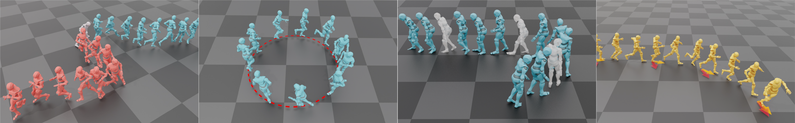

ACM Transactions on Graphics (Proc. SIGGRAPH 2024)
Yi Shi (1, 2), Jingbo Wang (2), Xuekun Jiang (2), Bingkun Lin (3), Bo Dai (2), Xue Bin Peng (1, 4)
(1) Simon Fraser University(2) Shanghai AI Lab(3) Xmov(4) NVIDIA

Abstract
Real-time character control is an essential component for interactive experiences,
with a broad range of applications, including physics simulations,
video games, and virtual reality. The success of diffusion models for image
synthesis has led to the use of these models for motion synthesis. However,
the majority of these motion diffusion models are primarily designed for
offline applications, where space-time models are used to synthesize an
entire sequence of frames simultaneously with a pre-specified length. To
enable real-time motion synthesis with diffusion model that allows timevarying
controls, we propose A-MDM (Auto-regressive Motion Diffusion
Model). Our conditional diffusion model takes an initial pose as input, and
auto-regressively generates successive motion frames conditioned on the
previous frame. Despite its streamlined network architecture, which uses
simple MLPs, our framework is capable of generating diverse, long-horizon,
and high-fidelity motion sequences. Furthermore, we introduce a suite of
techniques for incorporating interactive controls into A-MDM, such as taskoriented
sampling, in-painting, and hierarchical reinforcement learning (See
Figure 1). These techniques enable a pre-trained A-MDM to be efficiently
adapted for a variety of new downstream tasks. We conduct a comprehensive
suite of experiments to demonstrate the effectiveness of A-MDM, and
compare its performance against state-of-the-art auto-regressive methods.